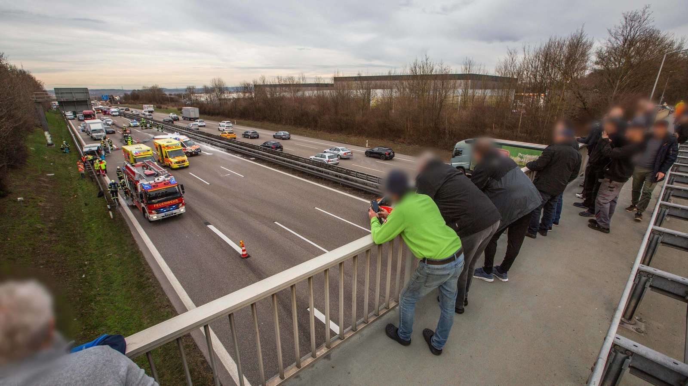

Krisen und Katastrophen sind für Betroffene und Helfende ohnehin schon schlimm genug zu verkraften. Doch immer wieder ist von sogenanntem „Krisentourismus“ oder auch „Dark tourism“ die Rede. Diese Art von Tourismus beschreibt Schaulustige, die nach Tragödien oder Naturkatastrophen in die betroffene Krisenregionen fahren um sich dort das Ausmaß der Zerstörung anzusehen. Dabei ist zu unterscheiden, dass sie keine Intention zur Hilfe haben, sondern aus reiner Neugier und persönlichem Interesse zum Unfallort fahren. Oft muss in Krisenregionen kurz nach einer Katastrophe die Infrastruktur wiederhergestellt, Trümmer beseitigt und nach Überlebenden gesucht werden. Solche Krisentouristen, behindern oftmals die Bergungsarbeiten oder verstopfen Zufahrts- und Rettungswege für Einsatzkräfte. 1 Nicht nur Einsatzkräfte, sondern auch Betroffene sind wütend und fassungslos über eine solche Belustigung am Leid anderer.
Besonders nach der Flut im Ahrtal 2021 wurden vielerorts Gaffer und Katastrophentouristen gemeldet. Schon am morgen des 15. Juli, während vielerorts noch die Evakuierungsmaßnahmen und Bergung von Toten und Verletzten in vollem Gange waren, appellierte die Polizei an Gaffer, sich vom Krisenherd zu entfernen und Rettungswege für Einsatzkräfte freizuhalten. „Schaulustige behindern den Rettungseinsatz im Bereich Schuld. Bitte haltet die Rettungswege frei!!!!!“ schreibt die Polizei Koblenz bereits 10:11 Uhr am 15. Juli 2021 über Twitter. 2 Beamte riefen mehrfach dazu auf, Straßensperren zu beachten, da die Gefahren unvorhersehbar seien. Auch Polizeisprecher Ulrich Sopart meldete sich per Twitter zu Wort: „Was die Hilfskräfte an den vielen Einsatzstellen überhaupt nicht gebrauchen können sind Gaffer, von denen einige offenbar nichts Eiligeres zu tun haben, als die Anfahrts- & Rettungswege zu belegen. Seht von nicht notwendigen Besuchen ab!“ 3 Auch von Plünderungsversuchen ist zu hören. In Bad Neuenahr sind laut Jeanette Hennericis, die vor der Flut ein Bekleidungsgeschäft im Ort betrieben hatte, an den Wochenenden „scharenweise“ Schaulustige durch die verwüstete Gemeinde gezogen. Dass diese Menschen nicht selbst Hand anlegen und helfen, macht Jeanette sprachlos und kann sie nicht verstehen. 4
Laut des Polizeipräsidiums Koblenz können Schaulustige wirkliche Probleme für betroffene Regionen darstellen. Die durch Einsatzkräfte, Helferinnen und Helfer und Betroffene verursachten Verkehrsprobleme verschlimmern sich durch Krisentourist:innen noch weiter. Die Polizei steht diesem Phänomen oftmals machtlos gegenüber. Sie kann zwar Platzverweise erteilen, wenn Einsatzkräfte behindert werden, darf den Menschen den Aufenthalt allerdings nicht grundsätzlich verbieten. Außerdem hat die Polizei oftmals nicht die Mittel, alle Personen vor der Einreise ins Katastrophengebiet zu kontrollieren und unerwünschte Personen abzuweisen. Allerdings wurde die Überlegung im Ahrtal laut, die Zufahrtsstraßen zum Tal zu sperren und Helfende mit Shuttlebussen zu den Einsatzorten zu bringen. 4
Auch im Internet und den sozialen Netzwerken entbrannten Diskussionen über das Verhalten von Schaulustigen und Katastrophentouristen. Betroffene, Helfende und Außenstehende Personen nannten dieses Verhalten fassungslos, unangebracht und nicht akzeptabel.
Gaffer-Phänomen
Doch nicht nur bei Naturkatastrophen gibt es Gaffer und Schaulustige. Auch bei Unfällen oder Rettungseinsätzen werden Einsatzkräfte mit Schaulustigen konfrontiert. Eine Umfrage des Deutschen Roten Kreuzes unter Mitarbeitenden untersucht das Problem näher.
Das „Gaffer-Phänomen“ wird von allen Teilnehmenden der Studie bestätigt. Die Anzahl der Schaulustigen hängt allerdings von der Intensität und spektakulären Art des Unfalls ab. Handelt es sich um einen Unfall auf der Autobahn mit einem auf der Seite liegenden Auto oder dem Einsatz eines Rettungshubschraubers, steigt die Häufigkeit der Schaulustigen, so die Befragten Einsatzkräfte. Außerdem hat das Phänomen, durch Smartphones und soziale Medien, in den vergangene Jahren deutlich zugenommen. Es wurde beobachtet, dass Personen teilweise nicht nur zufällig an Unfallorten vorbeifahren, sondern sich gezielt ins Auto setzen und absichtlich Unfallorte ansteuern.
Das Informationsbedürfnis ist grundsätzlich bei allen Menschen vorhanden. Allerdings überwiegt die Neugier bei vielen Personen so sehr, dass sie teilweise Einsatzkräfte bei ihrer Arbeit behindern oder Absperrungen gezählt überwinden, um einen besseren Blick auf die Opfer zu erlangen. Verstärkt wird das Verhalten durch die ständige Präsenz des Smartphones, das uns ermöglicht in jeder Situation Videos und Fotos aufzunehmen um sie danach möglicherweise auf sozialen Medien teilen zu können und mehr Sensationshungrige anzulocken, verstärkt. Ein weiterer Grund für das überwinden der Grenzen am Unfallort ist die schwindende Autorität der Einsatzkräfte. Sie verlieren als Vertreterinnen und Vertreter des Staates oft an Ansehen, wenn die Schaulustigen Personen selbst keine positive Assoziation zum deutschen Staat aufbauen können.
Zum Schutz vor unerwünschten Blicken werden oftmals Decken oder Planen eingesetzt. Eine professionellere Form stellen sogenannte mobile Sichtschutzwände da. Diese werden von Feuerwehren oder der Straßenmeisterei am Unfallort temporär aufgestellt, sind allerdings bei Einsätzen an anderen Stellen wie etwa im Stadtgebiet wenig verbreitet. Oft kann die Privatsphäre der Betroffenen dort nur mit behelfsmäßigen Maßnahmen geschützt werden.

In den vergangenen Jahren wurden Gesetze zur Stärkung des Schutzes von Rettungskräften erlassen und die Verbreitung von Fotos und Videos von Todesopfern unter Strafe gestellt. Diese Maßnahmen konnten allerdings keinen wahrnehmbaren Rückgang der Aktivität an Unfallstellen zeigen. Auch Anzeigen wegen Gaffens werden kaum gestellte, da die Einsatzkräfte bei einem Unfall eine strikte Priorisierung der Maßnahmen zu befolgen haben. Eine hohe Priorität steht der Sicherung der Unfallstelle und der Klärung des Unfallgeschehens zu. Neben der Verschärfung der gesetzlichen Maßnahmen und Regelungen werden durch die Ergebnisse der Umrage der DRK auch Präventivmaßnahmen an Schulen und Erste-Hilfe-Kursen vorgeschlagen. 6
Diese Fallbeispiele und Schilderungen der Einsatzkräfte zeigen wie wichtig eine partielle Abgrenzung von Bereichen zur präventiven Abschottung unerwünschter Gaffer und Belästigung durch Schaulustige ist. Ob bei Unfallstellen oder Katastrophengebieten, die Rettung und Hilfe von Betroffenen Personen muss oberste Priorität haben und darf nicht von wenigen Schaulustigen und Gaffern behindert werden. Auch das Verständnis für Privatsphäre und die Autorität der Einsatzkräfte muss gestärkt werden um solche Situationen in der Zukunft einzudämmen.
 7
-
Vgl. Rhein-Zeitung: Nach der Katastrophe folgt der Tourismus der Schamlosen, 2021, https://www.rhein-zeitung.de/region/aus-den-lokalredaktionen/kreis-ahrweiler_artikel ↩︎
-
Vgl. Stuttgarter-Zeitung: Schaulustige behindern Rettungskräfte im stark betroffenen Schuld, 2021, https://www.stuttgarter-zeitung.de/inhalt.unwetter-in-der-eiffelschaulustige- behindern-rettungskraefte-im-stark-betroffenen-schuld ↩︎
-
Vgl. Gießener Allgemeine: Hochwasser in der Eifel – Gaffer blockieren Rettungswege, 2021, https://www.giessenerallgemeine.de/panorama/schuld-in-der-eifel-mehrere-haeusernach- hochwasser-eingestuerzt-30-vermisste-90862240.html ↩︎
-
Vgl. Rhein-Zeitung: Nach der Katastrophe folgt der Tourismus der Schamlosen, 2021, https://www.rhein-zeitung.de/region/aus-den-lokalredaktionen/kreis-ahrweiler_artikel ↩︎ ↩︎
-
Abb.: Sichtschutzwand https://www.nordbayern.de/oberpfalz/neumarkt/feuerwehr-schlagt-alarm-viele-gaffer-beiunfall-auf-der-altdorfer-strasse-in-neumarkt-1.11493854 ↩︎
-
Vgl. CRISIS PREVENTION: Gaffen – Ein Einsatzproblem aus Sicht des DRK, 2022, https:// crisis-prevention.de/katastrophenschutz/gaffen-ein-einsatzproblem-aus-sicht-desdrk.html ↩︎
-
Abb.: Schaulustige https://www.merkur.de/bayern/nuernberg/unfall-nuernberg-autobahn-gaffer-lkw-brand-anzeige-auto-fahrer-feuer-polizei-dreist-91651163.html ↩︎